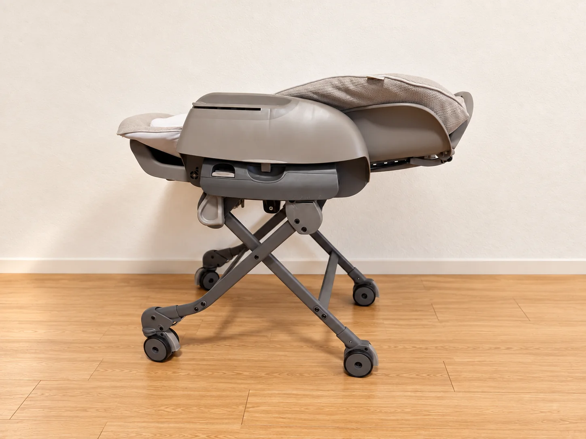
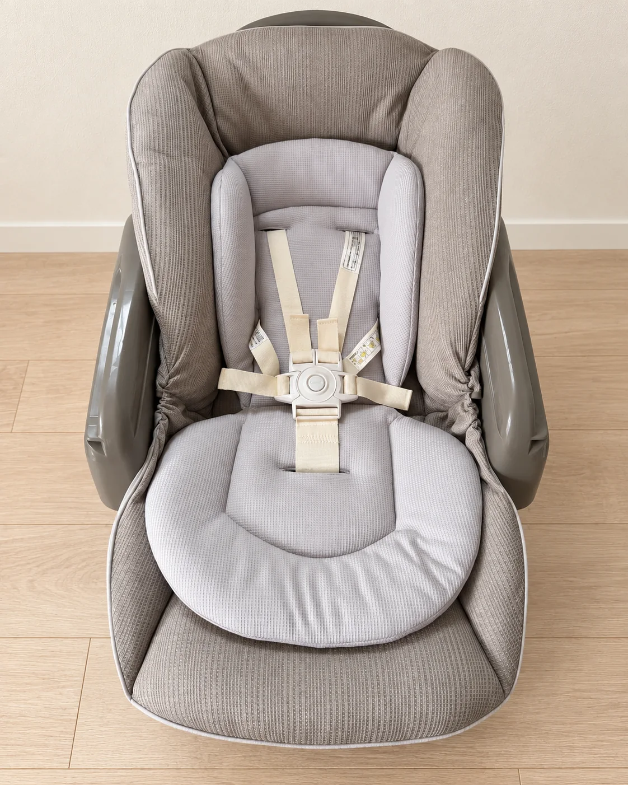
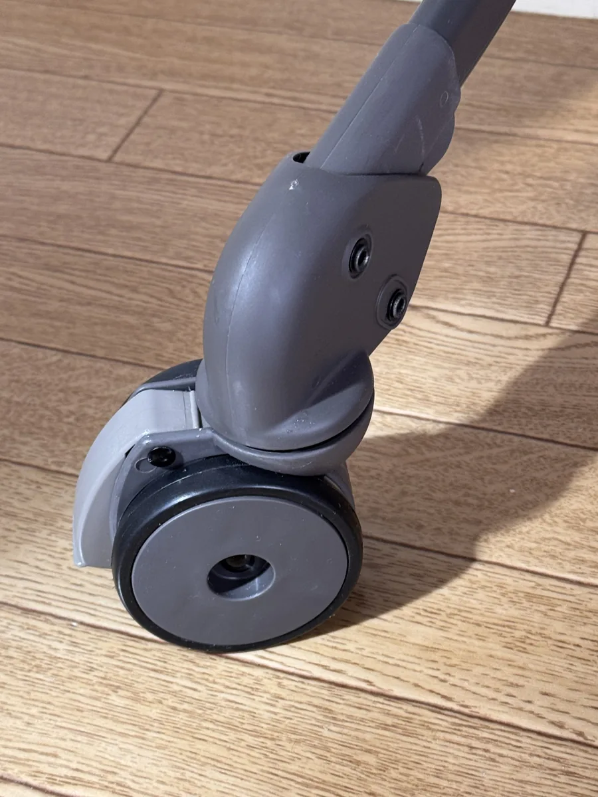
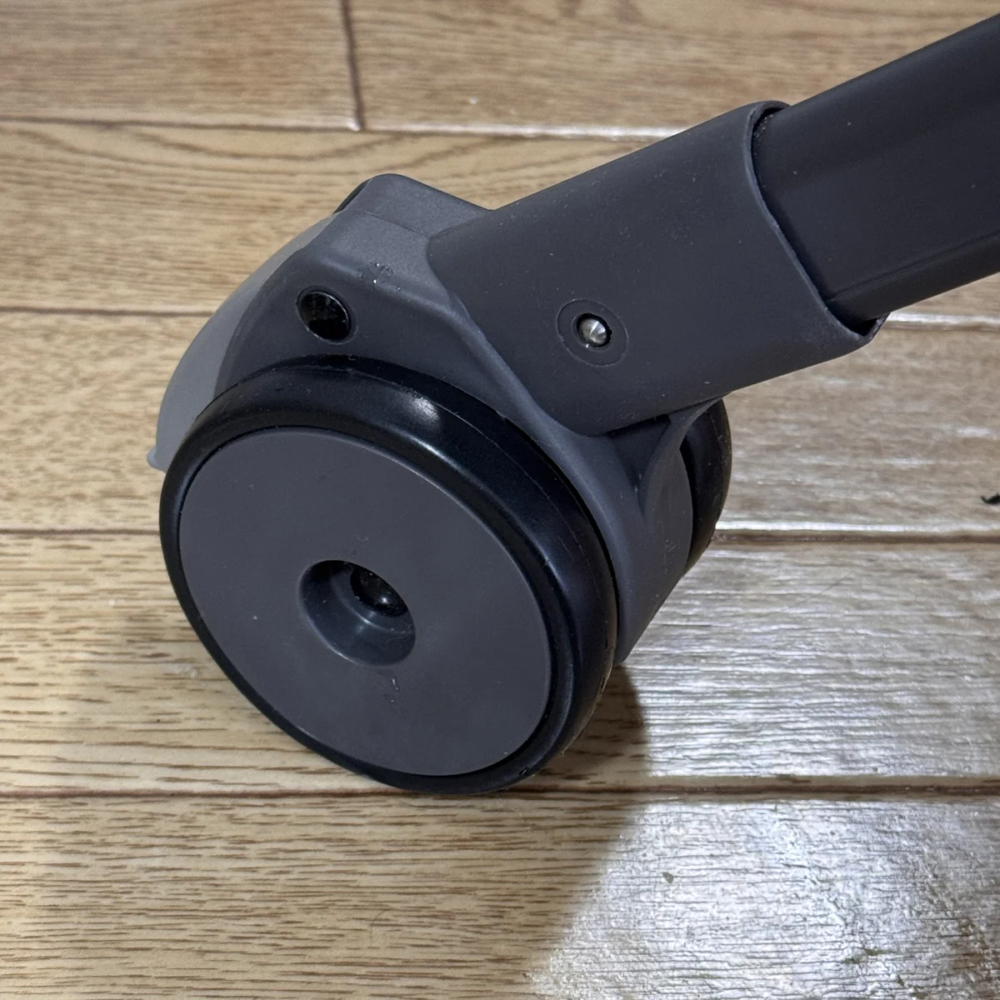
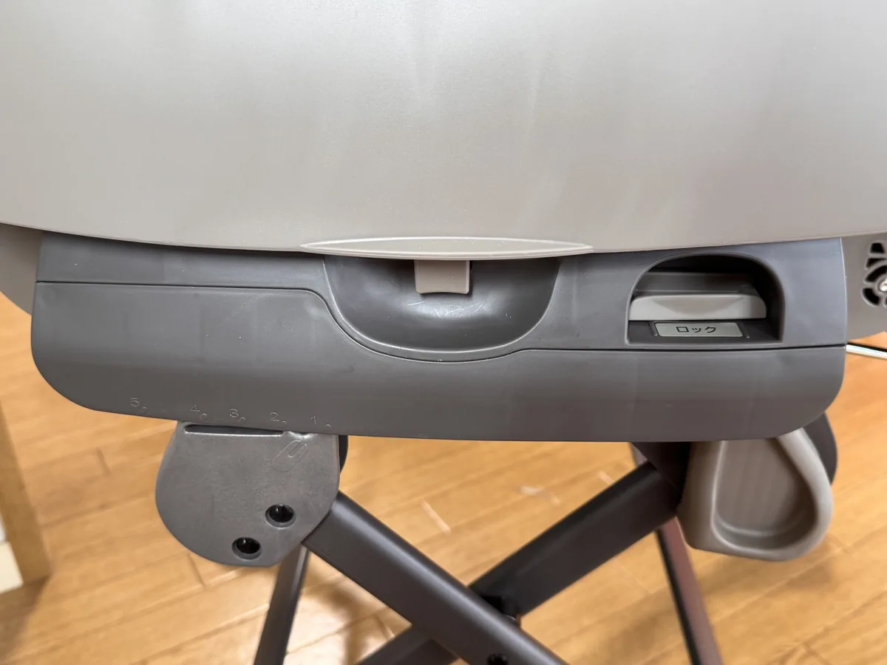
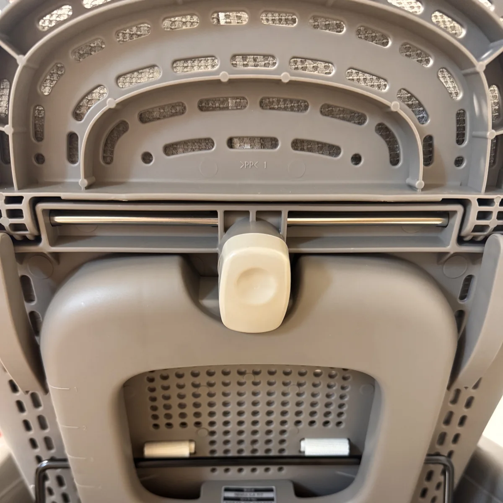
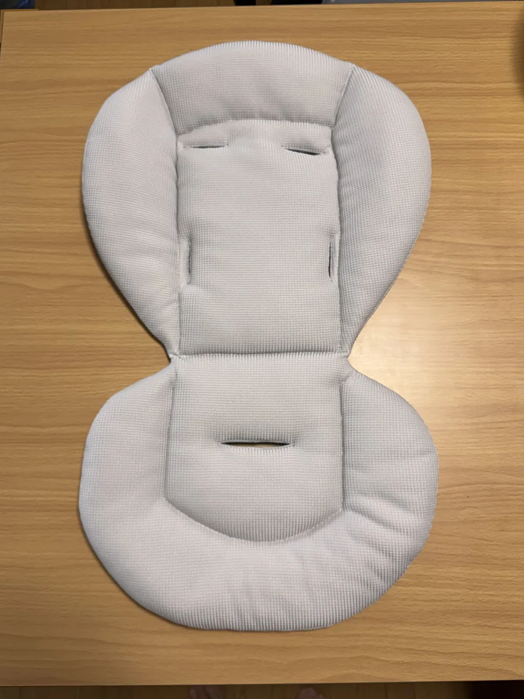
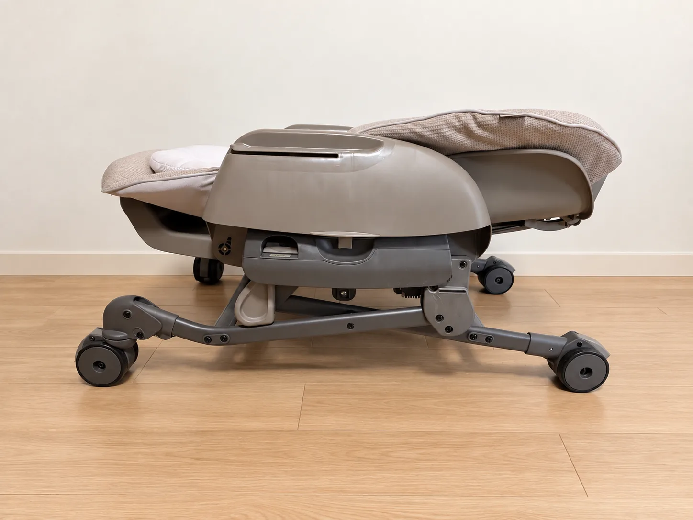

コンビ ネムリラ Fit AQ
軽さ最優先。約8.1kg。ほぼ同じ場所で使い、持ち上げやすさを重視する人に。
決め手は、静かな手動スイング、前輪キャスター、約8.8kgの軽さ。最軽量ではありませんが、寝かしつけと家の中での扱いやすさを両立しやすい一台でした。
ネムリラ CRが候補に合いそうなら、現在の価格を確認できます。
当ページには広告リンクが含まれます。リンク経由で購入された場合、運営者に報酬が入ることがありますが、購入価格は変わりません。商品評価は実際の使用感をもとに記載しています。

まず結論
3台すべてに良さがあります。わが家の条件ではネムリラ CRでしたが、軽さや価格を最優先するなら別の答えも合理的です。
コンビ ネムリラ Fit AQ
軽さ最優先。約8.1kg。ほぼ同じ場所で使い、持ち上げやすさを重視する人に。
コンビ ネムリラ CR
軽さ＋移動性＋新生児期。約8.8kg、前輪キャスター、インナークッションのバランス型。
現在の価格を見る →アップリカ ユラリズム スマート プレミアム
高さ調節・クッション性優先。6段階の高さ調節やリバーシブル新生児マットを重視する人に。
実際に買って、一番良かったこと
半信半疑で使い始めましたが、自宅へ戻ってから日常的に使い続けています。
出産直後に購入したものの、里帰り中の実家では使わず、自宅アパートへ戻ってから利用を始めました。当初は家事や在宅ワーク中にそばへ置くためでしたが、今では寝かしつけとぐずり対策が中心です。
うちの子の場合、夫の私が手で揺らしても落ち着き、おしゃぶりと合わせるとそのまま眠ることもあります。ネムリラ CRのスイングは静かで、夜も動作音が気になりにくいと感じました。







※ わが家での実体験です。赤ちゃんによって個人差があります。写真はすべて購入者が撮影し、公開用画像から撮影情報を削除しています。
ネムリラ CR・Fit AQ・ユラリズムの違い
公表仕様と、実際に選ぶときの判断を分けて整理しました。ネムリラ CR列はわが家の購入品として薄く強調しています。
| 比較項目 | ネムリラ CR わが家の購入品 | ネムリラ Fit AQ | ユラリズム スマート プレミアム |
|---|---|---|---|
| スイング | 手動使用感：静かで寝かしつけに便利 | 手動 | 手動 |
| 重量 | 約8.8kg | 約8.1kg | 約10.6kg |
| キャスター | 前輪キャスター使用感：Fit AQより方向転換しやすい | キャスター機能なし | キャスターあり |
| 新生児用 | インナークッションあり | インナークッションなし | 新生児マットあり |
| 洗濯 | シートは洗濯機対応 | シートは洗濯機対応 | シート等は洗濯機対応 |
| 高さ調節 | 5段階＋収納 | 5段階＋収納 | 6段階 |
| リクライニング | 5段階・ステップ連動 | 5段階・ステップ連動 | 5段階・ステップ連動 |
| 使用期間 | 新生児～4歳頃・18kg以下スウィング時は衣服等を含め8kgまで | 新生児～4歳頃・18kg以下 | 新生児～4歳頃・18kg以下 |
| 横幅 | 520mm | 520mm | 545mm |
| 価格目安 | 約29,000円～価格は変動します | 約25,000円～価格は変動します | 約26,000円～価格は変動します |
| 商品リンク |
スマホでは横へスクロールして比較できます。価格目安は2026年9月12日に確認した掲載商品の価格を丸めたもので、価格・在庫は随時変動します。
仕様確認日：2026年9月12日 出典：ネムリラ CR公式（アカチャンホンポ先行モデル） ／ ネムリラ CR公式（トイザらス限定モデル） ／ ネムリラ Fit AQ公式（ベージュ） ／ ユラリズム スマート プレミアム公式
ネムリラ CRを選んだ3つの理由
手動でも、うちの子の寝かしつけにはかなり便利でした。一定時間は手で揺らす必要がありますが、動作音は静かに感じました。
本音では4輪すべてが自在に動く仕様が理想でしたが、比較した候補には該当なし。その中では、キャスター機能のないFit AQよりネムリラ CRのほうが方向転換しやすいと感じました。
ユラリズムの約10.6kgより軽量。段差や狭い場所では本体を持ち上げる場面があるため、重量差は実生活で効きました。
新生児期から食事期まで
まだ離乳食前なので、食事チェアとしての使用感は未評価です。ここはメーカー仕様と購入前に確認したポイントです。
インナークッションがあり、小さい時期の体を包みやすい構成。
クッションやシートを外して洗いやすいかは、日常の負担を左右します。
成長後はクッションを外し、高さを合わせてチェアとして使える仕様。
手動と電動、どちらが合う？
予算に余裕があり、寝かしつけ中に手を離したいなら電動は合理的。わが家はコスパを重視し、「手動スイング＋前輪キャスター」のネムリラ CRが合いました。
実際に使って分かったこと
抱っこで落ち着かないとき、スイングを試せるだけで気持ちが少しラクになりました。寝たあとは安全な寝床へ移しています。
前輪キャスターがあるため、Fit AQより方向転換しやすいのはネムリラ CRの明確な利点でした。
キャスターがあっても万能ではありません。小回りが必要な場所では持ち上げるため、少しでも軽いことが助かります。
離乳食前なので汚れ方は未評価ですが、クッションやシートを外せる構成は、食事期を考えると安心材料でした。
どのモデルが向いている？
ハイローチェアを長時間睡眠用ベッドとして案内するものではありません。対象月齢、ベルト、スイング時の荷重制限、使用時間、リコール情報は、購入前にメーカー公式の商品情報・取扱説明書で確認してください。
わが家の最終結論
わが家はネムリラ CRを選んでよかったと感じています。ただし、軽さだけならFit AQ、高さ調節やクッション性ならユラリズム スマート プレミアム、手離れなら電動。自分が一番ラクにしたいことから選ぶのが、失敗しにくいと思います。
掲載している販売リンクはトイザらス・ベビーザらス限定のマーブルベージュです。ご指定のコンビ公式ページはアカチャンホンポ先行販売のアッシュグレーで、販売店によりカラー・価格・一部仕様が異なる場合があります。私はAmazonのらくベビーを使って購入したいと思いAmazonでも探しましたが、2026年9月12日時点ではネムリラ CRの取り扱いを確認できなかったため、Amazonボタンは表示していません。Yahoo!・楽天などで、本体価格とポイント還元を合わせて比べるのがおすすめです。
0歳児を育てる父親が、実際に3台を比較し、ネムリラ CRを購入して自宅で使用した記録をもとにまとめています。